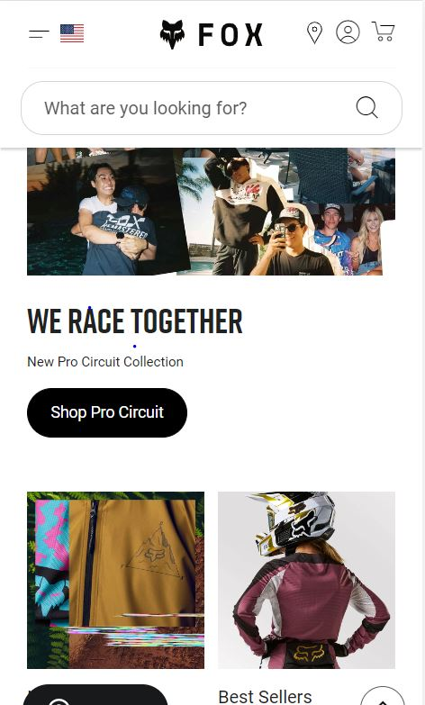
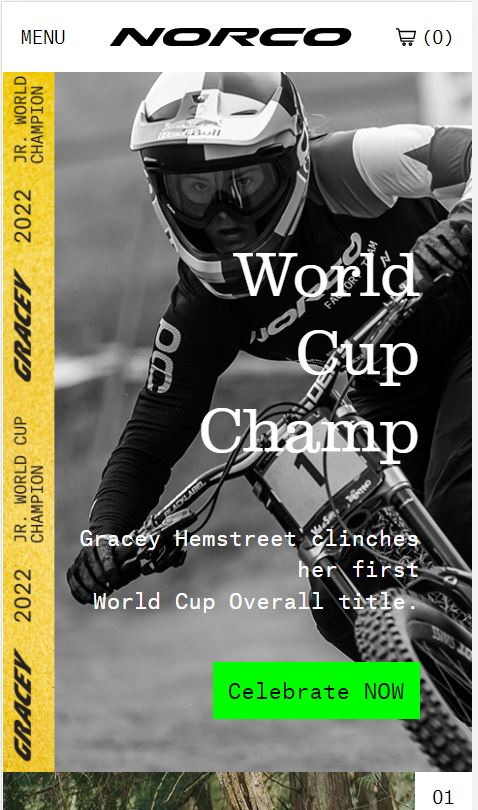

White Space and Clean Design
Google store uses the white spaces accuratelly, giving a considerable separation between each element in the website. Some eamples are the images, also they give each text or element a box with light colors so the white space is still visible.
Visual Hierarchy
FOX
Fox uses the Visual Hierarchy since they arrange the compoonents in a descending order using the biggest element at the top of the page and then the sizes change offering some products. It goes back to a bigger size element when a family of products is presented
PARC: Contrast
Norco
Norco uses the contrast principle, not only in the black and white colors of the very first image, but also on the hierarchy, font sizes. They also use bright colors to contrast in the buttons, icons and footer.